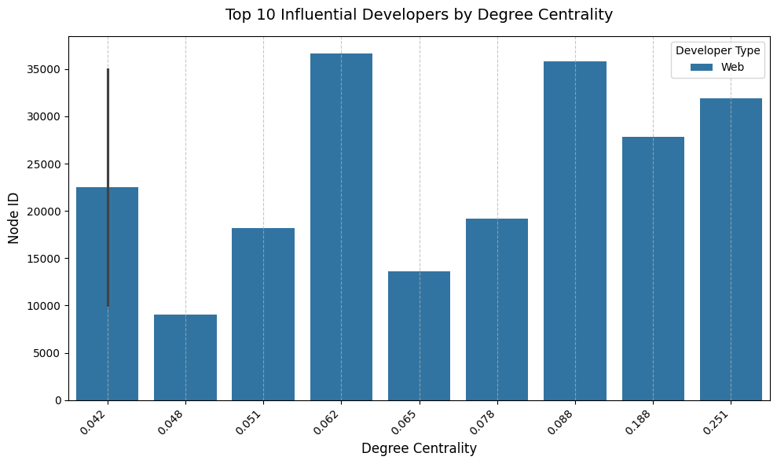
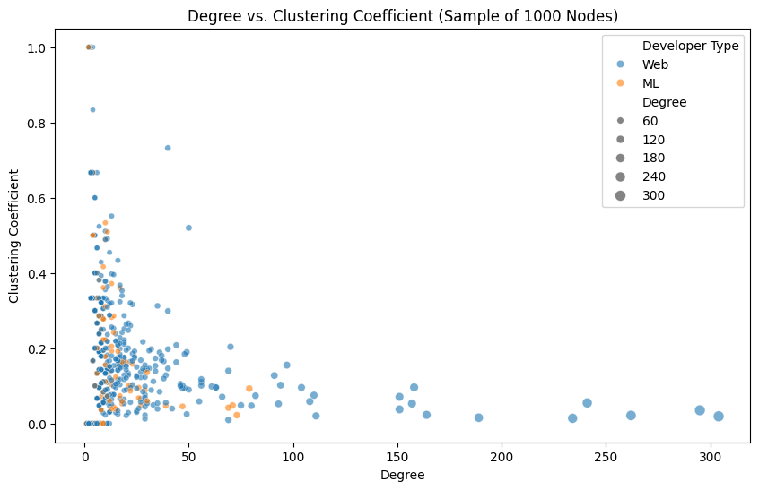

This report presents a comprehensive network analysis of the GitHub developer community using the GitHub MUSAE dataset from the Stanford Large Network Dataset Collection. The analysis aims to uncover insights into the social structure of GitHub developers, focusing on their influence, collaboration patterns, and connectivity. The findings are intended to support Backend.IM in enhancing its marketing strategies, user segmentation, and community engagement for API testing features.
The objectives of this study are to:
The dataset used is the GitHub MUSAE dataset, a social network dataset representing mutual follower relationships between GitHub users. Key details include:
Web developer (0) or an ML developer (1) based on the ml_target column in musae_git_target.csv.musae_git_edges.csv: Edge list with columns id_1 and id_2 representing follower relationships.musae_git_target.csv: Node labels with columns id and ml_target.The dataset was loaded into a networkx graph G, where nodes represent developers, edges represent mutual follower relationships, and each node has a developer_type attribute (Web or ML).
The analysis addresses six research questions, each with direct relevance to Backend.IM’s goals:
| # | Research Question | Relevance to Backend.IM |
|---|---|---|
| 1 | Who are the most influential developers in the GitHub network, and are they Web or ML developers? | Identify potential influencers for Backend.IM marketing campaigns. |
| 2 | How do Web and ML developers cluster in the network, and what does this reveal about their collaboration patterns? | Understand community structures to target API testing features effectively. |
| 3 | What is the difference in connectivity (degree distribution) between Web and ML developers? | Assess if one group is more connected, indicating potential adoption patterns for Backend.IM. |
| 4 | Are there bridges (high betweenness centrality nodes) between Web and ML developer communities, and who are they? | Identify connectors who can help spread Backend.IM across communities. |
| 5 | How does the network’s clustering coefficient vary between Web and ML developers? | Explore how tightly knit each group is, informing community engagement strategies. |
| 6 | Can we predict a developer’s type (Web vs. ML) based on their network properties? | Use network features to infer developer roles, aiding Backend.IM’s user segmentation. |
The analysis was conducted using Python with the following libraries:
networkx: For graph construction and network analysis.pandas: For data handling and manipulation.matplotlib and seaborn: For data visualization.scikit-learn: For machine learning (logistic regression).python-louvain: For community detection using the Louvain algorithm.G from the edge list (musae_git_edges.csv) using nx.from_pandas_edgelist.developer_type) from musae_git_target.csv, mapping ml_target values (0 for Web, 1 for ML).k=1000 for betweenness centrality) to reduce computation time.nx.degree_centrality.np.percentile.sns.barplot).community.best_partition) to detect communities.Web and ML developers.sns.histplot) on a logarithmic scale.nx.betweenness_centrality (using k=1000 for optimization).nx.clustering.sns.boxplot).sklearn.linear_model.LogisticRegression) to predict developer type.nx.spring_layout.sns.scatterplot).Web developers.| Node | Degree Centrality | Developer Type |
|---|---|---|
| 31890 | 0.251 | Web |
| 27803 | 0.188 | Web |
| 35773 | 0.088 | Web |
| 19222 | 0.078 | Web |
| 13638 | 0.065 | Web |
| 36652 | 0.062 | Web |
| 18163 | 0.051 | Web |
| 9051 | 0.048 | Web |
| 35008 | 0.042 | Web |
| 10001 | 0.042 | Web |

Web developers suggests they form more connections in the network, making them key targets for influencer marketing.Web and ML developers, suggesting collaboration between the two groups.

Web and ML developers in the largest community indicates potential for cross-disciplinary collaboration, which Backend.IM can leverage for community-based marketing.Web and ML developers, visualized on a logarithmic scale.Web and ML developers exhibit a skewed degree distribution, with most nodes having low degrees and a few having high degrees.
Web and ML developers have comparable levels of connectivity, but the dominance of Web developers in high-degree nodes (from Question 1) suggests they may be more visible in the network.Web developers.| Node | Betweenness Centrality | Developer Type |
|---|---|---|
| 31890 | 0.263204 | Web |
| 27803 | 0.240967 | Web |
| 19222 | 0.052186 | Web |
| 35773 | 0.046849 | Web |
| 13638 | 0.035719 | Web |
| 10001 | 0.028116 | Web |
| 36652 | 0.027381 | Web |
| 18163 | 0.024982 | Web |
| 5629 | 0.020634 | Web |
| 19253 | 0.019872 | Web |

Web developers play a critical role in connecting communities, making them ideal candidates for spreading Backend.IM’s API testing features across the network.Web and ML developers with a box plot.
Web and ML developers form similarly tight-knit local communities, which Backend.IM can target with community-specific engagement strategies.Web or ML.
Web developers.
Web developers and their central role in the network, supporting their use in marketing campaigns.| Key Finding | Business Impact for Backend.IM |
|---|---|
Web developers dominate influential roles (all top 10 by degree centrality are Web). |
Target Web developers for influencer marketing to promote Backend.IM’s API testing features. |
| 34 communities detected, with the largest containing both Web and ML developers. | Leverage cross-disciplinary collaboration in the largest community for community-based marketing. |
| Degree distributions are similar for Web and ML developers. | Both groups have comparable connectivity, but Web developers’ higher visibility (from Question 1) suggests they may drive adoption faster. |
Web developers act as bridges between communities (all top 10 by betweenness centrality are Web). |
Use these bridge nodes to spread Backend.IM across communities, enhancing network-wide adoption. |
| Clustering coefficients are similar for Web and ML developers. | Both groups form tight-knit communities, so community-specific engagement strategies (e.g., tailored tutorials) can be effective. |
| Achieved 75% accuracy in predicting developer type. | Implement this model for automated user segmentation, helping Backend.IM personalize marketing and feature recommendations. |
This network analysis of the GitHub MUSAE dataset provides actionable insights for Backend.IM. Web developers dominate influential and bridging roles, making them key targets for marketing campaigns. The network’s modular structure (34 communities) and the presence of cross-disciplinary collaboration in the largest community highlight opportunities for community-based strategies. The similar degree distributions and clustering coefficients of Web and ML developers suggest comparable connectivity patterns, while the 75% accuracy in predicting developer type demonstrates the potential for network-based user segmentation.
Web developers for targeted marketing campaigns to maximize adoption.Web developers dominate key roles, ensuring balanced representation in future analyses.networkx: Graph processing and analysis.pandas: Data handling.matplotlib, seaborn: Data visualization.scikit-learn: Machine learning for classification.python-louvain: Community detection.